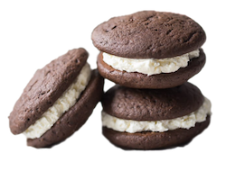
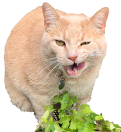

Fresh from the Oven
Breads

Our breads are made daily from highest-quality whole grain flour, water, salt, and yeast or sourdough starter. Simply and naturally, and never any preservatives. Patience is key to achieving the proper level of fermentation and baking each loaf to perfection. Available in whole grain, sourdough, olive loaf, classic rye, and potato-onion. Our bread is the greatest thing since sliced bread... which is odd because we don't pre-slice the loaves that we sell.
Muffins

Every day, we offer a large selection of muffins, including blueberry, multi-berry, bran, corn, lemon-poppyseed, and chocolate. Our muffins are made from scratch each day. Stop by to see our seasonal muffin flavors! If you order a muffin from us in the morning there's a very good chance we will say "Top 'o the muffin to ya!" is a very bad attempt at an Irish accent.
Whoopie Pies
We now make Whoopie Pies! Yes, the favorite treat of Lancaster, PA is now available in Cincinnati. But no, we don't understand their name. Why Whoopie Pies? They're not pies, they're more like big cookies with cream in the middle. They're pretty good, but they're not so amazing that I feel compelled to yell "Whoopie!" after taking a bite of one.
Cat Treats
Ivan the big buff cat works in our kitchen and he will guarantee that you get a wide assortment of cat hair in all of our baked goods. You've probably heard of cats "making biscuits" with their paws, but Ivan takes it to a whole other level! All customers who enter our store are required to pet him, tell him that he is handsome, but not mention the fact that he is overweight. You will be reprimanded if you refer to him as orange. He's actually the color buff which is a light mixture of yellow ocher and white, typical of buff leather.